La detención , procesamiento y condena de Ocalan expresan no sólo el drama del pueblo kurdo sino también el de Turquía como país que vive en permanente debate entre la tradición y la modernidad.
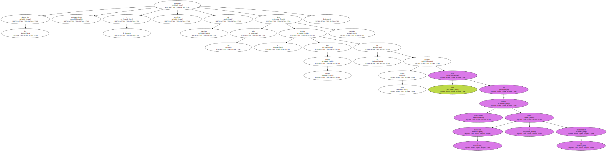Cuando el tribunal turco que juzgaba al líder del PKK , Abdulá Ocalan , pronunció su sentencia de muerte , los familiares de las víctimas del terrorismo que estaban presentes en las sala se levantaron y para mostrar su alegría por la sentencia cantaron el himno nacional de Turquía.
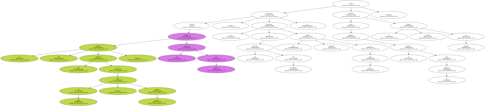Creo que éste es el resumen más claro de un asunto tan tremendo.
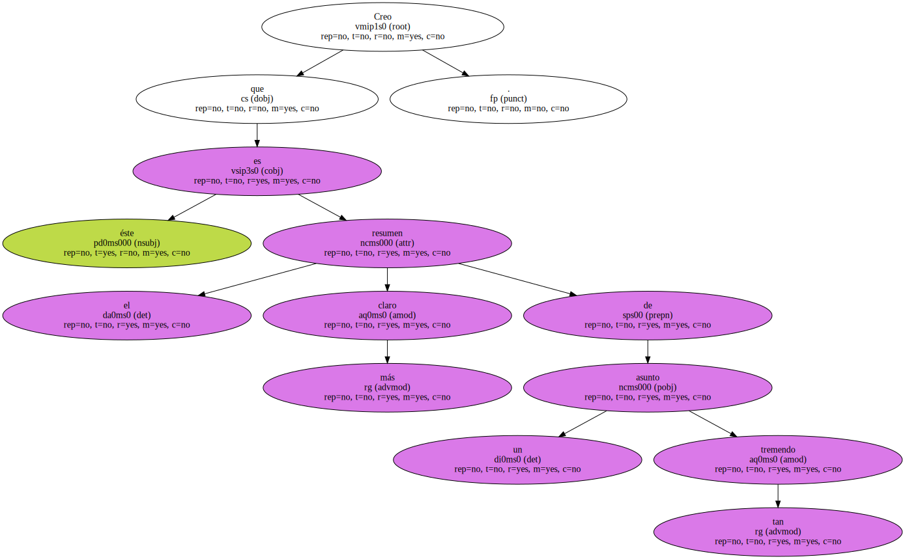La sentencia de muerte , en sí misma , todavía tiene que recorrer un largo camino hasta llegar a la decisión final del propio presidente de la República.
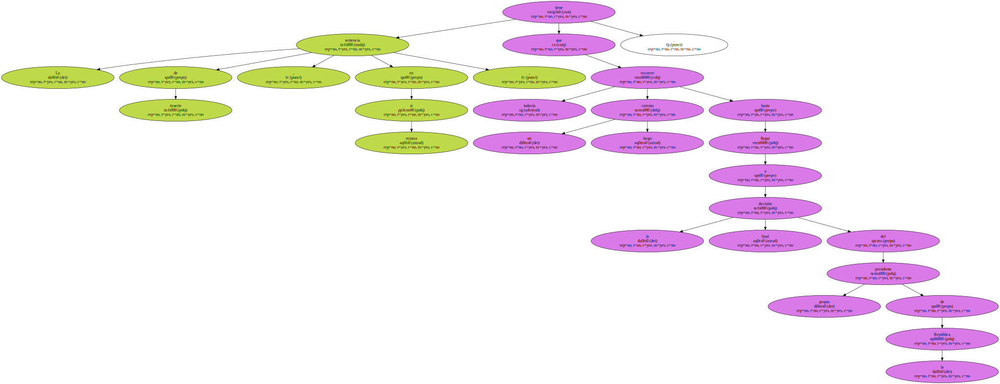Y , desde luego , Turquía estará sometida a una fuerte presión de los países europeos , sobre todo del Consejo de Europa , que la puede expulsar de su seno si la ejecución se lleva a cabo.
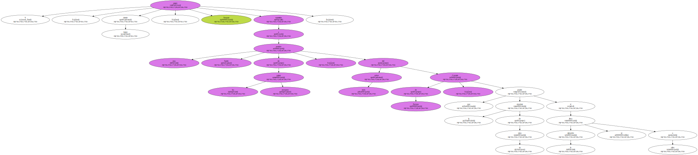Con la excepción de los islamistas , todas las fuerzas políticas turcas , desde la derecha extrema hasta la izquierda radical , se sienten heredadas del kemalismo , es decir , del golpe militar que en el primer tercio de este siglo acabó con el viejo y decadente imperio islámico y bajo la dirección de los propios militares se propuso convertir a la vieja Turquía en un país laico , moderno y centralizado por la vía del autoritarismo.
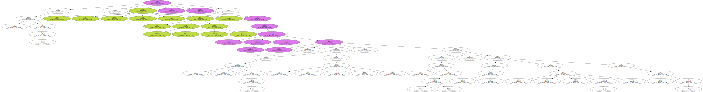Siguiendo , más o menos , la línea del Estado jacobino francés , Kemal Ataturk y sus seguidores se negaron a aceptar minorías lingüísticas o étnicas en el seno del mismo y proclamaron que todos los habitantes de Turquía eran por definición turcos , fuese cual fuese su lengua o su etnia.
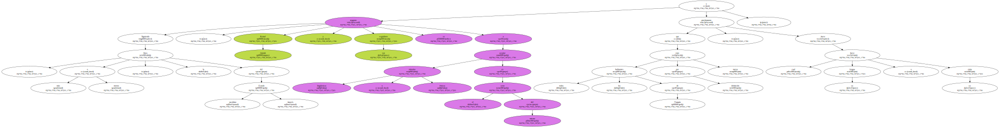Este programa sigue vigente y así lo proclama la actual Constitución.
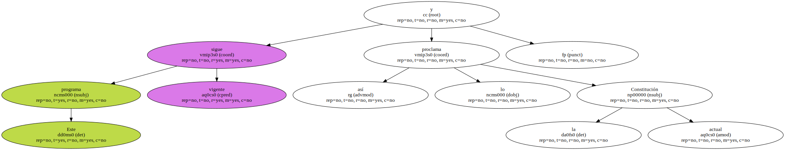En nombre de ella se consiguió poner en marcha un sistema multipartidista y parlamentario , pero en los últimos años este sistema se ha resquebrajado por el auge del islamismo interno y por la presión de una minoría kurda que acabó recurriendo al terrorismo.
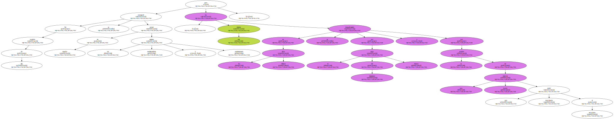Y ante las dos amenazas , los militares , que desde el primer momento siguieron ejerciendo el papel de vigilantes de las esencias del kemalismo , han aumentado su propia presión , expulsando a los islamistas del poder , aunque lo hayan conseguido por vía parlamentaria , e intensificando la lucha contra el terrorismo kurdo , sin distinguir demasiado a los terroristas del resto de la población kurda.
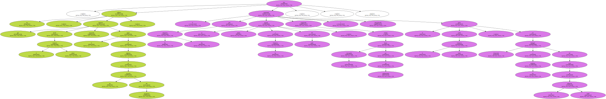Como es bien sabido , los kurdos no sólo habitan en el sureste de Turquía sino también en el noreste de Irak , en Irán , en Azerbaiyán y en Armenia y , en general , se encuentran minorías kurdas en todos los países del Cáucaso , pero siempre en situaciones diferentes.
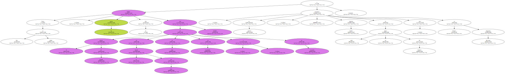Turquía , por ejemplo , es un aliado fundamental de Estados Unidos en la confrontación militar con Irak , pero los kurdos que habitan el norte de Irak , y periódicamente se pelean a muerte entre ellos mismos , también colaboran con Estados Unidos en la misma batalla contra Sadam Husein.
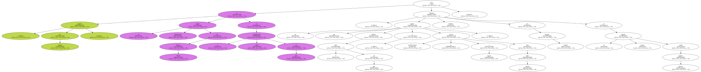Y el hecho incontrovertible es que ninguno de los estados de la zona está dispuesto a ceder ni un milímetro de su propio territorio para que los kurdos , hoy tan dispersos , puedan crear un problemático estado kurdo en una zona ya de por sí conflictiva en la que , además , existen importantes intereses petrolíferos.
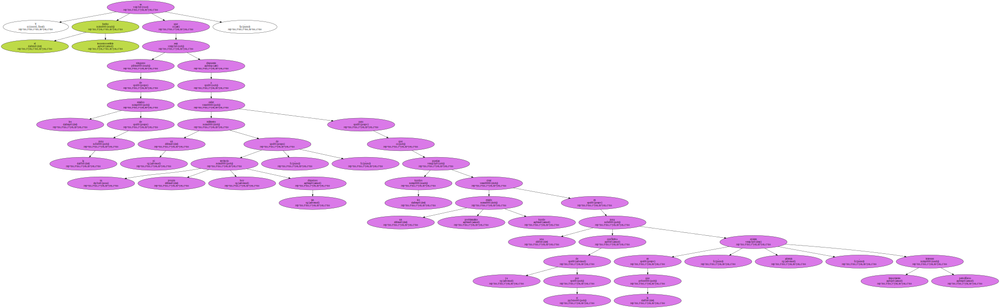Cuando el Gobierno turco aduce , como prueba de que no hay discriminación hacia los kurdos , que hay miles de kurdos que viven sin problemas étnicos en todo el país , y que el presidente del Parlamento y un buen número de diputados de todos los partidos son kurdos , está diciendo la verdad.
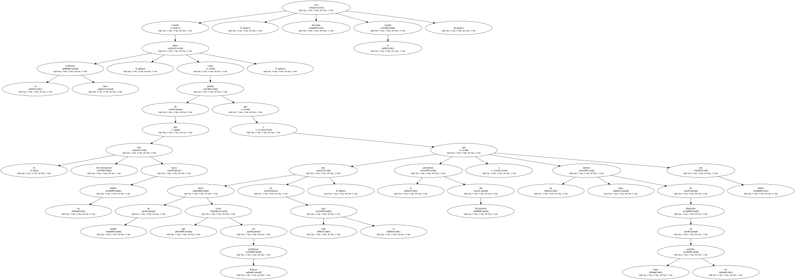Pero el problema de Turquía es diferente del de los demás países de la zona , precisamente porque Turquía está integrada en los grandes mecanismos europeos.
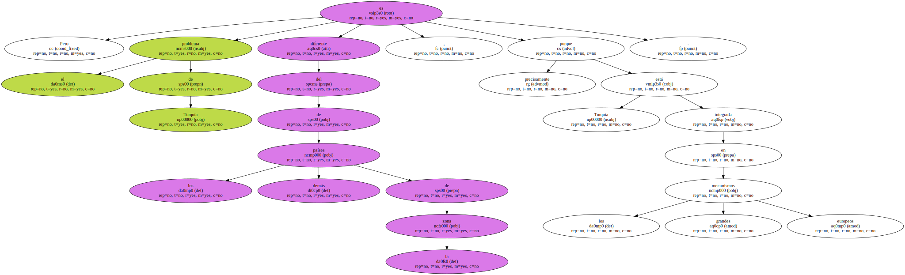Por esto se le exige desde Europa una solución democrática que no alcanza a países vecinos menos integrados en el espacio europeo , por esto se le propone que sin perder su condición de Estado centralizado y laico otorgue la autonomía a su minoría kurda.
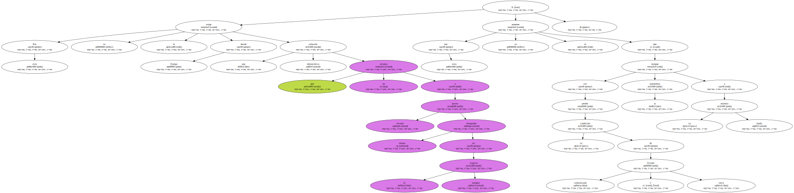El drama es que , hoy por hoy , en este país inmenso que tiene un pie en Europa y el otro muy lejos de ésta , ninguna fuerza política esté en condiciones de asumir este programa y esta propuesta sin peligro de hundirse y , sobre todo , sin peligro de propiciar un golpe político de las Fuerzas Armadas , siempre al acecho como vigilantes supremos del Estado turco.
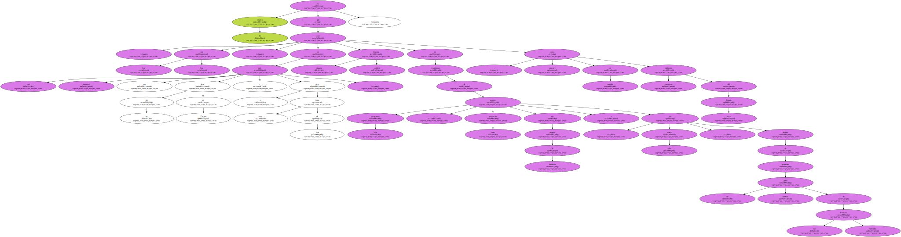En esta mezcla de democracia y de autoritarismo , en este clima de laicismo y de fundamentalismo islámico , la voz de los kurdos sólo se ha oído a través de los atentados terroristas , que han sido percibidos por la mayoría del pueblo turco no sólo como una violencia insoportable sino también como la ruptura de la identidad colectiva de un pueblo asediado por vecinos incómodos y por amenazas contra su propia unidad.
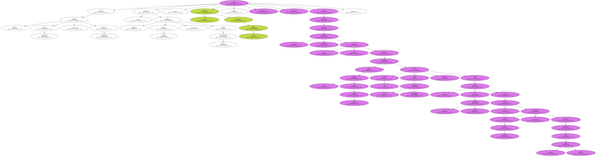Por esto cantan el himno nacional cuando el tribunal condena a muerte al principal símbolo del terrorismo kurdo.
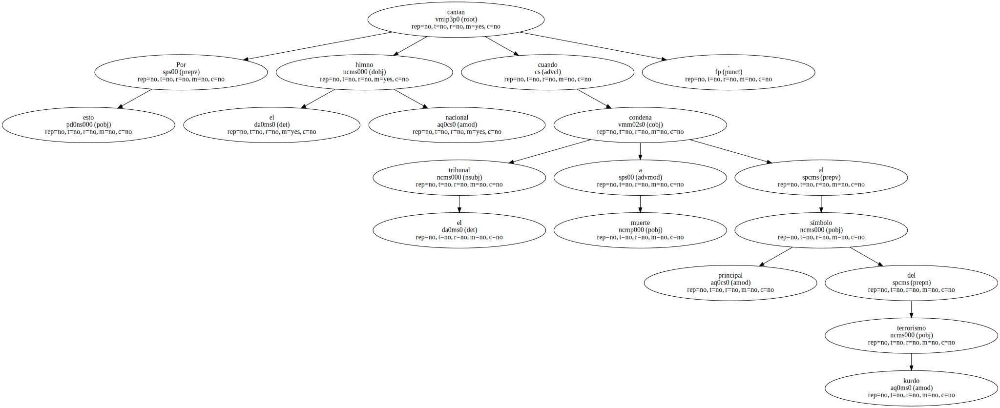Es evidente que , a la corta o a la larga , esta tensión insoportable tendrá que desembocar en una solución política y que ésta sólo podrá consistir en el otorgamiento de una amplia autonomía a la población kurda.

Pero , desgraciadamente , hoy por hoy las espadas están en alto y en los próximos meses asistiremos a un estallido de consecuencias imprevisibles.

Por esto el mensaje que desde Europa tenemos que enviar una y otra vez a los ciudadanos turcos y a sus gobernantes es que asuman la realidad de este pluralismo , que sin mengua de su propio orgullo nacional propongan una solución autonómica y que conviertan a los kurdos en corresponsables de su propio autogobierno dentro de una Turquía unida.
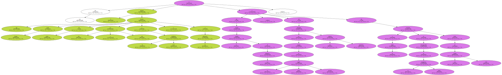Y , desde luego , que se olviden de la pena de muerte.
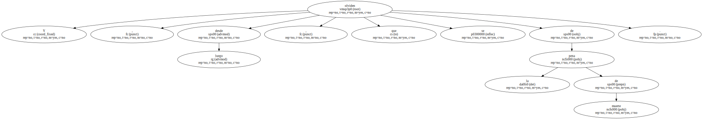